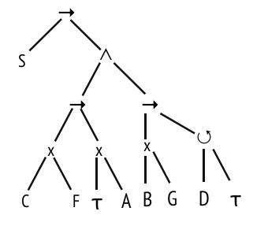

TD2 Business Process Analytics
Université Paris Dauphine - M2 STIN, 2019
Objectifs du TD
- Manipuler les arbres de processus (process trees)
- Utiliser l'inductive miner
Exercice 1
 Construisez le réseau de Petri correspondant.Exercice 2
L1 = { < A B C I O I O I >, < B A C U >, < C A B U >, < C B A I >}- Construisez le DFG (directly-follows graph).
- A l'aide de l'inductive miner, déduisez l'arbre de processus
- Dessinez le réseaux de Petri correspondant
Exercice 3
(a)
L2 = { < A B C D B D B G > , < A I G >, < A C B D B G > }- Construisez le DFG (directly-follows graph).
- A l'aide de l'inductive miner, tentez de déduire l'arbre de processus (process tree).
- On est face à une situation où il n'existe pas de cut parmis ceux définis. En faisant une modification dans le DFG, deux cuts peuvent être considérés. Lesquels ? Lequel vous semble le plus approprié ?
- Quel est alors le réseau de Petri associé à cet arbre ?
(b)
L2 = { < A B C D B D B G >100 , < A I G >2, < A C B D B G >100 }En considérant les fréquences d'apparitions des différentes variantes de séquences, on constate que la deuxième trace est nettement plus rare et semble représenter un comportement déviant. Afin d'avoir un modèle à l'image de la plupart de nos traces nous introduisons une borne inférieure de fréquence de relation entre deux activités à 10.
- Construisez le DFG en considérant les fréquences des relations. Fixez une borne inférieur minimale de fréquences à 10. Quelles sont les modifications à considérer dans l'arbre de processus ?
Exercice 4
Considérer l'arbre de processus suivant.
- Quel est le réseau de Petri associé ?
- Quels comportements sont parfaitement représentés par ce modèle ?
- On observe la séquence < I V A R O >. Quelle modification du réseau de Petri permet facilement d'accepter cette nouvelle séquence ?
- Expliquez pourquoi on ne peut pas aussi aisément modifier l'arbre de processus.
Exercice 5
L3 = { < A B > , < A C B > }.- Déroulez l'inductive miner.
- Quel problème rencontrez-vous ?